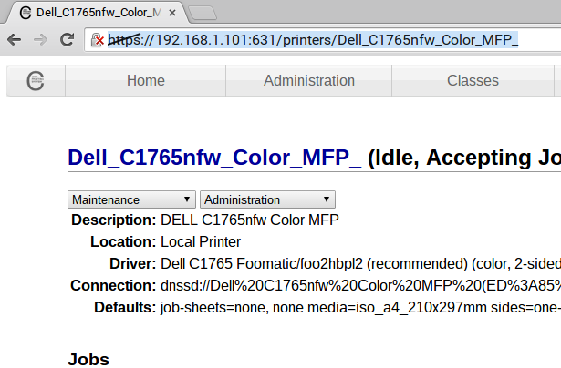

This extension allows you to print directly to a CUPS print server or IPP compatible printer.
IPP stands for Internet Printing Protocol a protocol used by some printers to accpet print jobs.
When using IPP, Google Cloud print is not required, your documents stay within your local network - unless you set it up specifically to print across the Internet.
This is a customized version of the extension, maintained here to keep support alive.
All analytics and tracking have been removed - no data is collected, reported, shared, or stored.
1) You need a CUPS (Common Unix Printing System) service configured and running on your local network or a printer that natively supports the IPP protocol.
2) You need the full IPP (Internet Printing Protocol) address of the printer. This application (unlike e.g. Airprint) does not automatically discover printers on the network. This is due to a current limitation with public Chrome extensions not being able to scan the network for printers.
The address needs to include the http:// or https:// prefix.
Using CUPS: Go to the CUPS admin page on your CUPS server (typically http://your_address:631/) Select 'Printers', then the link to the printer you want to use. Your browser address bar should now contain the IPP address, which should look something like this: http://192.168.1.101:631/printers/Dell_C1765nfw_Color_MFP_
Paste this address into the server address area, and give the printer a friendly name (e.g. Office 103 printer).

For printing direct to a printer that supports IPP (Internet Printing Protocol): Consult your printers documentation or configuration menu to find the full IPP address.
Please note if you are connecting direct to a printer (not via CUPS) the IPP printer MUST SUPPORT PDF, PWG, Postscript or Unirast document types. Check the specifications carefully for this support.
Either consult the printer specs looking for the PDF/PWG/URF/Postscript compatibility or test the printer using the test function in the management page.
After entering the IPP address and name for the printer, click save.
Clicking the info button will query the printer for it's capability.
If the printer is compatible then it will show PASS.
If the printer is not reporting compatibility it will show FAIL You can attempt to print regardless of the test result.
Just select the IPP printer from the printer options dialogue when you <ctrl-p> or select print from the Chrome menu.
Chrome will show a notification in the bottom-right corner which contains a success or failure code.
If your print job is large (e.g. a few MB) then it will take time to notify.
IPP Server status code: client-error-not-found
The address of the print server is incorrect, check the address and re-enter.
Cannot contact printer - check URL & connectivity / Type error: Failed to fetch
The system cannot resolve the name of the printer. Please check the name or enter the IP address instead.
The extension requests access for communications to http://*/* and https://*/* as it needs to send print jobs to the printer or print server.
The Chrome permission request looks like this: "Read and modify all your data on all websites you visit". The permission is explained
here about half way down the page.
The extension does not require access to passwords or other sensitive information.
The extension does not store any print jobs or documents.
Create an issue on GitHub
v0.1.34 - [04.07.2026] takeover from chrome store to keep support alive
v0.1.35 - Fixed race condition where printer dropdown would sometimes be missing on reload of unpacked extension.